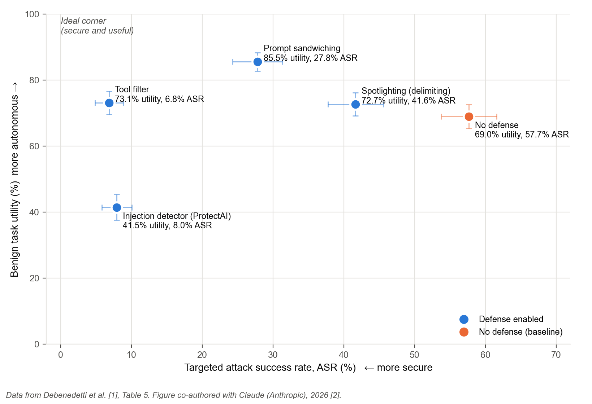

Introduction#
A web-browsing agent is a language model that can open pages, read email, and call tools with the permissions of the person who launched it. Indirect prompt injection is the attack that follows. An attacker hides instructions inside content the agent was asked to read, and the agent carries them out as if the user had typed them. This sheet is for engineers who are adding agent features to a browser, an email client, or an internal tool, and who have to pick a defense before shipping.
Every defense on this page works by taking something away from the agent. That is the part most guidance leaves out, so each defense below is labeled by what it blocks and by what the agent can no longer do on its own. The numbers come from one independent benchmark rather than from the papers that proposed each defense, for reasons the benchmark section explains.
This sheet does not cover direct prompt injection, where the attacker is the user, or jailbreaks that target the model's content rules. Those have their own sheets.
Anatomy of the Vulnerability#
Traditional software keeps a line between code, which is trusted, and input, which is not. A language model has no such line. It receives one stream of text and treats all of it as something to act on. The researchers who named the attack in 2023 put it this way.
LLM-integrated applications "blur the line between data and instructions."Greshake et al., 2023 [1]
The agent is also what security engineers have called a confused deputy since 1988. It holds the user's authority and the attacker's instructions at the same time and cannot keep them apart.
It "serves two masters and carries some authority from each to perform its respective duties. It has no way to keep them apart."Hardy, 1988 [2]
The path below shows where untrusted content enters and where each family of defense can step in. Gates are the places a defense sits. Everything to the right of a gate is what the gate protects, and everything the gate refuses is what the user gives up.
Worked Example, Auto-GPT 2023#
The earliest well-documented case is still the clearest. In June 2023 Lukas Euler of Positive Security asked Auto-GPT, an early autonomous agent, to summarize a website he controlled [3]. The sequence is the whole attack in five steps.
- The page carried instructions in text sized to zero pixels, invisible to a person and plain to the model.
- Auto-GPT read the page and adopted the hidden instructions as its next goals.
- The agent spoofed its own console output with terminal control codes, so the user saw a harmless plan and approved it.
- With approval, the agent ran attacker-chosen code on the machine.
- In the project's Docker setup the code escaped the container onto the host. The maintainers fixed the escape in version 0.4.3.
Two later cases show the same path on shipping products. In August 2025 Brave showed that Perplexity's Comet browser could be redirected by instructions hidden in a Reddit comment, and the agent then exposed the user's email address and a one-time login code after a simple summary request [4]. Brave's description of the cause is the diagnosis in one sentence.
Comet "feeds a part of the webpage directly to its LLM without distinguishing between the user's instructions and untrusted content from the webpage."Chaikin and Sahib, Brave, 2025 [4]
Two months earlier, Aim Labs disclosed EchoLeak, in which one crafted email pulled data out of Microsoft 365 Copilot with no click from the user at all [5]. Microsoft rated it critical at CVSS 9.3 and fixed it server side [6].
Common Attack Types for Browsing Agents#
| Vector | Where it hides | Seen in | Why it works |
|---|---|---|---|
| Hidden page text | Zero-pixel fonts, white on white, off-screen elements | Auto-GPT [3] | The model reads the DOM, not the rendered page |
| User-generated content | Comments, spoiler tags, reviews on an otherwise trusted site | Comet [4] | The agent trusts the domain and inherits its comments |
| Zero-click email | A message body the assistant indexes before anyone opens it | EchoLeak [5] | Retrieval runs without a user action to gate it |
| Output spoofing | Control codes inside tool output shown to the user | Auto-GPT [3] | The approval prompt displays attacker-controlled text |
| Delayed trigger | Instructions that wait for a later tool call or a later task | AgentDojo attack suite [7] | Defenses that check only the first read miss it |
Primary Defenses#
Defenses are listed from the one to turn on first to the one to turn on last. Each heading carries a label. The label is not a quality grade. It says what the defense asks the user to give up, which is the question this sheet exists to answer.
Tool filterRecommended first layerRemoves mid-task tool changes
Before the agent reads anything untrusted, the model is shown only the user's request and the tool list, and it picks the tools this task will need. Everything else is removed for the rest of the run. Injected text can still change what the agent says, but it cannot reach a tool the plan did not include.
- Blocks
- Almost every targeted attack in the benchmark, 57.7% down to 6.8% [7].
- Gives up
- The agent cannot discover that it needs a new tool halfway through. When the plan changes, the user restarts the task.
- Requirements
- A tool list with clear descriptions, and a planning step that runs before any fetch.
- Concerns
- Tasks that are genuinely open ended lose the most. Utility held at 73.1% in the benchmark, above the undefended agent, but only on tasks whose tools could be predicted up front [7].
Approval gate before data leavesRecommended for consequential actionsCosts attention
Willison's rule for practitioners is the lethal trifecta. An agent that has private data, reads untrusted content, and can send data out is exploitable, so remove one of the three [8]. For a browsing agent the first two are the point of the product, which leaves the third. Any action that sends data outside the session, such as an email, a form submission, or an outbound request, waits for a person to approve it.
- Blocks
- Exfiltration, which is the payoff of every case above.
- Gives up
- Unattended runs. Someone must be present to click.
- Requirements
- Approval prompts that show the real action, rendered from structured data and never from tool output text, or the Auto-GPT spoof returns.
- Concerns
- The CaMeL authors warn of "user fatigue" when prompts come too often [9]. A gate people click through without reading is not a gate.
Capability tracking layer, CaMeL styleStrongest guaranteeHighest cost
CaMeL wraps the model in a conventional program that tracks where every value came from. Data that arrived from an untrusted page carries that mark, and a policy decides which tools it may flow into. The model proposes, the wrapper enforces, and the authors report zero successful attacks out of 949 on the benchmark with Claude 3.5 Sonnet [9].
- Blocks
- Untrusted data from ever changing control flow, by construction rather than by probability.
- Gives up
- Task completion and flexibility. With o3 the undefended agent finished 84% of tasks and CaMeL 77% [9]. Someone also has to write and maintain the policies.
- Requirements
- The agent must be rewritten in CaMeL's style, with explicit data flow. It is not a wrapper you bolt onto an existing agent.
- Concerns
- The authors are direct about the limits.
"No, prompt injection attacks are not fully solved."Debenedetti et al., CaMeL, Section 9.3 [9]
Spotlighting, data delimitingCheapSmall measured gain
Retrieved text is wrapped in markers, or transformed, so the model can tell it apart from instructions. It costs almost nothing to add. The gap between the vendor's number and the benchmark's number is the reason this sheet trusts benchmarks.
- Vendor claim
- Spotlighting cut attack success "from greater than 50% to below 2%" in Microsoft's own experiments [10].
- Benchmark
- On AgentDojo it moved attack success from 57.7% to 41.7% [7].
- Gives up
- Nothing the user can see. That is also why it cannot be the only defense.
- Concerns
- Treat it as hygiene, in the way input encoding is hygiene for web apps, and layer something above it.
Prompt sandwichingCheapPartial
The user's original request is repeated after every tool result, so the most recent instruction the model sees is always the user's. It raised benign utility to 85.5% in the benchmark, the highest of any defense, and still let 27.8% of attacks through [7].
- Gives up
- Context budget. Every step carries the request again, which matters on long tasks.
- Concerns
- One attack in four succeeds. Good as a second layer behind a tool filter, not as a first.
Injection classifier on tool outputDiscouraged as the only defense
A separate model scores each retrieved document for injection and blocks what it flags. In the benchmark the ProtectAI classifier cut attacks to 8.0% and also cut benign utility to 41.5%, because it blocked safe pages along with hostile ones [7]. A survey of 128 studies puts false positive rates for input filters at 15% to 30% [11].
- Gives up
- Access to ordinary pages. The user opens blocked pages by hand, or gives up on the task.
- Concerns
- Detection falls on new attack phrasings, so a classifier tuned today drifts. Use it in report-only mode to learn what it would block before letting it block anything.
Instruction hierarchy, model trainingKeeps flexibilityProbabilistic
OpenAI trains the model to rank system and user instructions above anything that arrived in retrieved text, and reports large robustness gains with "minimal degradations on standard capabilities" [12]. Because the defense lives inside the model, the agent keeps every tool and every mid-task change of plan.
- Gives up
- Nothing visible to the user, and nothing you control. You get whatever the model vendor shipped.
- Concerns
- A trained behavior lowers the odds of an attack and guarantees nothing, and the published numbers come from the vendor's own evaluations. No independent benchmark row exists yet, which is why it is absent from the table below.
What One Benchmark Measured#
AgentDojo is an independent suite of 97 agent tasks and 629 injection cases that scores task completion and attack success at the same time [7]. Its authors ran four published defenses on GPT-4o against their strongest attack. Table 1 collects the results, and Fig. 1 plots them.
| Defense | Benign utility (%) | Utility under attack (%) | Attack success (%) | What the user gives up |
|---|---|---|---|---|
| No defense | 69.0 (±3.6) | 50.0 (±3.9) | 57.7 (±3.9) | Nothing, and 58% of attacks succeed |
| Spotlighting | 72.7 (±3.5) | 55.6 (±3.9) | 41.7 (±3.9) | Nothing visible, small gain |
| Prompt sandwiching | 85.5 (±2.8) | 67.3 (±3.7) | 27.8 (±3.5) | Context budget, 1 in 4 attacks still land |
| Tool filter | 73.1 (±3.5) | 56.3 (±3.9) | 6.8 (±2.0) | No new tools mid task |
| Injection classifier | 41.5 (±3.9) | 21.1 (±3.2) | 8.0 (±2.1) | Safe pages blocked |

Read the top left corner of Fig. 1 as the product you wanted to ship. It is empty. The two defenses that nearly stop the attack sit at opposite ends of the utility axis, and the one that keeps the agent most useful lets a quarter of attacks through. Pick a point on this chart knowingly, and tell the people who will use the agent which corner you gave up.
Report-Only Rollout#
Content Security Policy taught web teams to run a new rule in report-only mode before enforcing it. The same move works here. Run the defense, log what it would have blocked, block nothing, and promote it once the log shows what it costs on your real traffic. This is the only way to learn a classifier's false positive rate on your own pages before your users do.
# agent.policy (report-only rollout of a new defense)
defense = tool_filter
mode = report_only # log would-be blocks, block nothing
log_sink = security_review # one line per would-be block, with the task id
review_after = 14 days
promote_when = would_be_blocks are all true positives
and task_restart_rate is acceptable to product
Two weeks of logs answers the question Table 1 cannot. The benchmark tells you what a defense costs on its 97 tasks. The log tells you what it costs on yours.
Design Review Checklist#
Paste this into the design review for any feature that lets a model read content the user did not write. A feature that cannot answer every item is not ready for unattended use.
Scope and Limits of This Sheet#
The numbers are from one benchmark, one model, and one attack style, so treat them as the shape of the trade off and not as your numbers. Only the defenses with a benchmark row appear in Table 1. The instruction hierarchy has no independent row, and CaMeL's own numbers are on a different model and a later release of the benchmark, so they are quoted in the text rather than placed on the chart. The three product cases are demonstrations by researchers, not attacks observed in the wild. The field is young, and the "last reviewed" date at the top of this page is there because every number on it will age.
References#
- K. Greshake, S. Abdelnabi, S. Mishra, C. Endres, T. Holz, and M. Fritz, "Not what you've signed up for: Compromising real-world LLM-integrated applications with indirect prompt injection," in Proc. 16th ACM Workshop on Artificial Intelligence and Security (AISec '23), Nov. 2023, pp. 79 to 90. doi 10.1145/3605764.3623985
- N. Hardy, "The confused deputy: (or why capabilities might have been invented)," ACM SIGOPS Operating Systems Review, vol. 22, no. 4, pp. 36 to 38, Oct. 1988. doi 10.1145/54289.871709
- L. Euler, "Hacking Auto-GPT and escaping its docker container," Positive Security, Jun. 29, 2023. positive.security/blog/auto-gpt-rce
- A. Chaikin and S. K. Sahib, "Agentic browser security: Indirect prompt injection in Perplexity Comet," Brave, Aug. 20, 2025. brave.com/blog/comet-prompt-injection
- Aim Labs, "Breaking down 'EchoLeak', the first zero-click AI vulnerability enabling data exfiltration from Microsoft 365 Copilot," Aim Security, Jun. 11, 2025. aim.security/lp/aim-labs-echoleak-blogpost
- Microsoft Security Response Center, "CVE-2025-32711, M365 Copilot information disclosure vulnerability," Jun. 11, 2025. msrc.microsoft.com/update-guide/vulnerability/CVE-2025-32711
- E. Debenedetti, J. Zhang, M. Balunović, L. Beurer-Kellner, M. Fischer, and F. Tramèr, "AgentDojo: A dynamic environment to evaluate prompt injection attacks and defenses for LLM agents," in Advances in Neural Information Processing Systems, vol. 37, 2024, pp. 82895 to 82920. arxiv.org/abs/2406.13352
- S. Willison, "The lethal trifecta for AI agents: Private data, untrusted content, and external communication," Jun. 16, 2025. simonwillison.net/2025/Jun/16/the-lethal-trifecta
- E. Debenedetti et al., "Defeating prompt injections by design," arXiv preprint 2503.18813, Jun. 2025. arxiv.org/abs/2503.18813
- K. Hines, G. Lopez, M. Hall, F. Zarfati, Y. Zunger, and E. Kiciman, "Defending against indirect prompt injection attacks with spotlighting," arXiv preprint 2403.14720, Mar. 2024. arxiv.org/abs/2403.14720
- T. Geng, Z. Xu, Y. Qu, and W. E. Wong, "Prompt injection attacks on large language models: A survey of attack methods, root causes, and defense strategies," Computers, Materials & Continua, vol. 87, no. 1, 2026. doi 10.32604/cmc.2025.074081
- E. Wallace, K. Xiao, R. Leike, L. Weng, J. Heidecke, and A. Beutel, "The instruction hierarchy: Training LLMs to prioritize privileged instructions," arXiv preprint 2404.13208, Apr. 2024. arxiv.org/abs/2404.13208
- L. Beurer-Kellner et al., "Design patterns for securing LLM agents against prompt injections," arXiv preprint 2506.08837, Jun. 2025. arxiv.org/abs/2506.08837
- OWASP Cheat Sheet Series, "LLM prompt injection prevention cheat sheet," the genre model for this page. cheatsheetseries.owasp.org
Image credits
The attack path diagram and Fig. 1 were made by the author, co-authored with Claude (Anthropic, 2026). Fig. 1 plots data from Debenedetti et al. [7], Table 5. No third-party images are used.